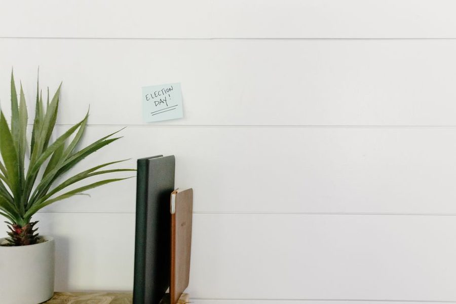

Anotado em 7 de maio · leitura de 5 minutos
Quinze minutos com três perguntas fixas produzem mais resultado que uma hora de planejamento detalhado feito uma vez a cada dois meses.

Planejamento doméstico costuma falhar por excesso. A pessoa monta uma planilha com cinco abas, cores por categoria e metas mensais, usa por três semanas e abandona. Quando volta a olhar, dois meses depois, a planilha está tão desatualizada que da menos trabalho começar outra.
A alternativa é um bloco fixo de quinze minutos, no mesmo horário de todo domingo, com três perguntas escritas: o que tem data marcada nesta semana, o que atrasou na semana passada e o que precisa ser comprado ou resolvido fora de casa. Nada além disso.
A limitação é o que faz o ritual durar. Quinze minutos cabem em qualquer domingo, inclusive nos ruins. Uma hora só cabe nos domingos bons, e domingos bons são minoria.
A segunda pergunta é a mais útil e a que costuma ser pulada. Olhar o que não foi feito produz duas informações: quais tarefas foram mal escritas e quais dias estão sobrecarregados. Se o mesmo item atrasa três semanas seguidas, ele precisa ser reescrito, delegado ou riscado.
Riscar sem culpa é parte do método. Uma casa não é uma empresa e não precisa entregar tudo o que foi planejado; precisa funcionar. Itens que ninguém sente falta quando somem eram ruido desde o começo.
A terceira pergunta evita a viagem extra ao mercado na quarta-feira. Com a lista de compras nascendo do mesmo ritual, o deslocamento fica concentrado e a compra de impulso diminui, porque quase tudo foi decidido longe da prateleira.
Um detalhe prático: a lista de compras deve ficar visível durante a semana inteira, com espaço para acrescimo. O que acabou na quarta entra na hora, e não depende de alguém lembrar no sábado.
Se a casa tem mais de um adulto, os quinze minutos são dos dois. A conversa resolve em um bloco o que normalmente vira dez trocas de mensagem durante a semana. Crianças maiores podem participar da parte das datas: saber o que vem pela frente reduz a quantidade de surpresa na porta de casa.
Não é uma reunião. Não precisa de ata, de aplicativo compartilhado nem de acompanhamento de metas. Precisa de um papel visível e de acontecer toda semana no mesmo horário.
A mudança perceptível não é ter mais tempo livre: é a queda no número de urgências. Conta que vence sem aviso, remedio que acaba no domingo a noite e material escolar descoberto na véspera vão rareando. O ganho real do planejamento doméstico é esse, e ele só aparece com repetição.
Texto do caderno do Plano Claro. Escrevemos a partir da rotina de casas comuns; adapte o que servir e ignore o resto.